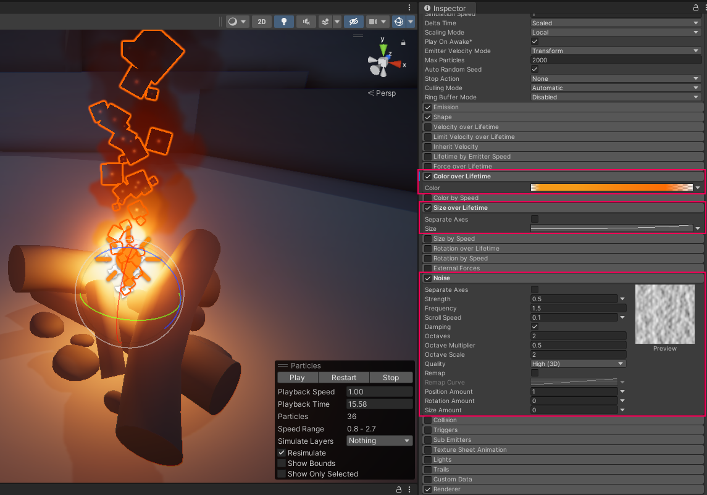
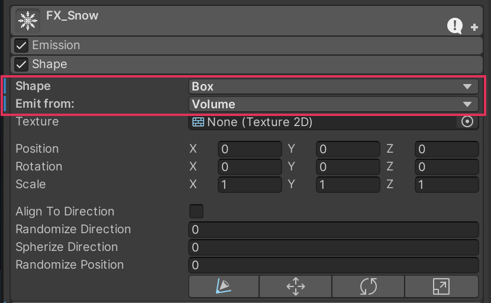
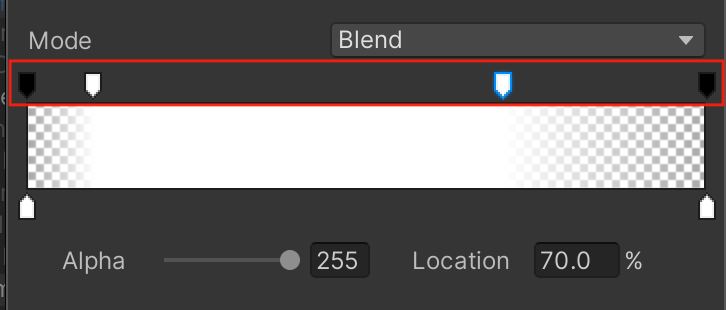
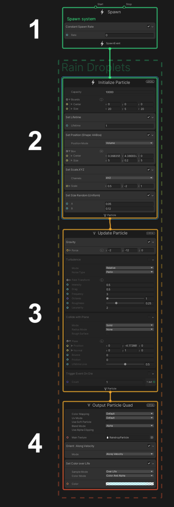

Build effects from many short lives
How was this made?
- Why does the weather continue while each snowflake disappears?
- What makes a puff feel sudden instead of like a stream?
- How could the fire, smoke and light respond together to one key?
In Lecture 14: Creative Core: Animation, curves shaped one object’s motion through a clip. Here, each particle has its own birth, age and disappearance. You will author a snow system and smoke burst, connect the burst to the supplied fire control, and read the equivalent stages of a VFX Graph.
New conceptParticles and emitters
A particle is one small visual element, such as a snowflake or smoke patch. An emitter creates many of them. The system keeps producing new snowflakes as old ones die, so a continuous snowfall is made from many short individual lives. Individual particles are not separate Hierarchy GameObjects.
New conceptContinuous emission and bursts
Continuous emission spreads births over time, like steady rain. A burst creates a group together, like dust at a landing. This is a timing choice: smoke can stream from a chimney or appear as a single puff.
New conceptAppearance over a lifetime
A particle can grow and fade as it ages. Its lifetime is the time between birth and death. A short-lived spark and a longer-lived smoke patch can follow the same relative fade shape at different speeds.
New conceptModules and graph contexts
A module controls one responsibility in a Particle System: births, starting values, motion or drawing. VFX Graph expresses similar responsibilities as connected contexts. We start with modules so every change has a visible consequence.
Prior-knowledge recap: Lecture 9 used existing particle effects; authoring their lifecycle is the focus now. Lecture 12 explains the material/shader distinction used by the Renderer. Lecture 13 separates a visible bright object from a Light illuminating its surroundings.
Learning outcomes
By the end of this lecture, you will be able to:
- Assign particle behavior to the appropriate module.
- Relate speed, lifetime, emission rate and capacity to a visible weather effect.
- Create a one-shot burst with deliberate size and opacity changes.
- Connect supplied input behavior to fire, smoke and a Point Light.
- Interpret the four main VFX Graph contexts and choose a suitable system.
- Design and justify a different burst timing under fixed constraints.
Skip to practice → · Use Slide mode to study the theory first. Prepare the project before class. Plan 10–15 minutes for theory, approximately 65 minutes for practice and quizzes, and 10 minutes afterward for recording/export. These are estimates, not observed completion times.
Teaching scope
Keep the earlier material/lighting and animation-curve links brief. Do not add the full 30-minute magic challenge or a second guided-project build. The independent burst adaptation below is the transfer task. VFX Graph is interpretation, not a second complete authoring workflow.
Prepare a fresh VFX project
Download and import before class. Use the full official project so the materials, render pipeline and support script agree. Unless a step explicitly says Play mode, edit outside Play mode.
Open the supplied scene and preserve a clean original.
- Download CreativeCore_VFX_U6.3.zip (about 12 MB), extract it, and use Unity Hub Add → Add project from disk to select the folder containing Assets, Packages and ProjectSettings. Open with Unity 6.3. The archive was authored in 6000.3.0b9; allow its import/upgrade to finish in this fresh copy.
- In the Project window open Assets → CreativeCore_VFX → Scenes → TutorialScene_VFX_Outdoor. Create Assets/Lecture15 and use File → Save As to save VFXStudy.unity there. Keep the source scene unchanged.
- Check the Console for errors. The supplied script uses the legacy Input Manager, and this archive already selects it. If a copied project reports an input-backend exception, use Edit → Project Settings → Player → Other Settings → Configuration → Active Input Handling and select Input Manager (Old) or Both, then allow the requested restart before class.
- Expand FirePit in the Hierarchy and select Fire_ParticleSystem_Prefab. Frame it with F. Use the Scene view Particle Effect controls to Play, Pause and Restart the effect. Enter Play mode once to check the fire in Game view, then exit.
Explanation
The project already contains URP and VFX Graph 17.3.0 plus the sample materials. Opening a full project preserves these dependencies; importing only its Assets into an unrelated project does not. The old input backend is a requirement of the supplied support script, not of particles themselves.
Scene view preview lets you inspect the selected system without running gameplay code. The keyboard script runs only in Play mode. Changes made while playing are generally discarded when you stop; save your authored settings outside Play mode.
Refresher (1)Particles and emitters
The Hierarchy selects a system; the Scene view preview shows many particles produced by that one component.
Separate the fire’s responsibilities
Use the existing effect to identify which module owns each visible change. This brief inspection establishes vocabulary before you author a new system.
Observe how the sparks change when modules are enabled.
- Expand Fire_ParticleSystem_Prefab and select VFX_Sparks. Enable its GameObject checkbox at the top of the Inspector. Restart the effect.
- On the sparks component, enable Color over Lifetime, then Size over Lifetime, then Noise, observing each change separately. The sample already contains suitable values in these modules; this step activates them.
- Pause the preview and compare the sparks with the flames. Leave the three sparks modules enabled. Do not edit the fire material or Point Light yet; those changes would mix several causes.

Explanation
| Responsibility | Where it lives | What it does not decide |
|---|---|---|
| Starting lifetime, speed and size | Main module, named after the GameObject | How many new particles are born per second |
| Birth timing and count | Emission | The image drawn on each particle |
| Birth region and initial directions | Shape | The texture or material |
| Visible surface | Renderer and Material | Whether the surrounding scene receives light |
| Changes as particles age | Color/Size over Lifetime; Noise | The GameObject’s active state |
As in Lecture 12, a material determines appearance. As in Lecture 13, a separate Light illuminates the scene. Bright sparks do not automatically replace the fire’s Point Light. Noise perturbs motion; it is not audio noise.
Build continuous snow with a particle budget
Make a downward-moving sheet of snow. First establish direction and travel; then choose density and appearance. The numbers below are a controlled baseline rather than a universal weather preset.
Create snow that reaches the firepit instead of dying in the sky.
- At the Hierarchy root, right-click Effects → Particle System; name it FX_Snow. Set Transform Position (0, 10, 0), Rotation (90, 0, 0) and Scale (1, 1, 1). Keep it separate from FirePit.
- Expand the main module named FX_Snow. Set Start Speed = 1, Start Size = 0.1, Start Lifetime = 5, Gravity Modifier = 0, Simulation Space = World. Keep Looping and Play on Awake enabled; leave Prewarm off for this comparison.
- In Shape choose Box, Emit from = Volume, and the Shape module’s Scale (10, 10, 1). Leave Shape Position/Rotation at zero. Keep the GameObject Transform scale at one. The rotated local box becomes a broad horizontal layer.
- Preview from the side: at 1 unit/second and 5 seconds of life, a flake travels only about 5 units. Change Start Lifetime to 10 and Restart; watch flakes cross toward ground level. Ground geometry varies, and Collision is off, so this is visual coverage rather than ground collision.

Explanation
With constant speed and no gravity, noise or collision, distance = speed × lifetime. Here 1 unit/second × 5 seconds = 5 units; 10 seconds gives 10 units. The box has thickness, so births are not all at exactly Y = 10. Rotation maps its local forward direction downward. The Shape’s scale changes the region of births, not each snowflake’s Start Size.
World simulation means particles already emitted keep their world positions when the emitter moves. Local simulation would make existing particles follow the emitter’s Transform. Compare that with Lecture 14’s distinction between local motion and parent placement. We keep this emitter still for the test.
Choose steady density, a clean start and a snow material.
- Set Emission Rate over Time = 80 and Rate over Distance = 0; keep the Bursts list empty. In the main module set Max Particles = 1000, Duration = 10 and enable Prewarm. Looping must remain enabled.
- Expand Renderer and use the Material object picker to select SnowMaterial from Assets/CreativeCore_VFX/VFX/Samples/Snow. Keep the default billboard rendering, which draws flat particles facing the camera.
- Enter Play mode and check that snow is already distributed across the view. Exit. Temporarily lower Max Particles to 100, restart the preview and observe whether births thin out or pause as the cap is reached. Restore Max Particles to 1000.
- Drag FX_Snow from the Hierarchy into Assets/Lecture15 to create FX_Snow.prefab. Save the scene. Keep this snow prefab available while you author the smoke.
Explanation
In steady continuous emission, approximate live count = rate × lifetime: 80 particles/second × 10 seconds ≈ 800 particles. Max Particles is a ceiling, not a request to create that many. A ceiling of 100 prevents the intended population. More particles can cost simulation and drawing time; overlapping transparent pixels also cost rendering work, so count alone is not a performance measurement.
Duration controls the system’s cycle; Start Lifetime controls each particle’s life. Prewarm initializes a looping system as though a cycle had already run. With the 10-second duration here, the snow can be populated at startup instead of waiting to fall from the sky. The transparent snow material controls the flake shape; it does not change birth rate.
Refresher (1)Continuous emission and bursts
A continuous effect stays visible because births replace deaths. Its live population depends on both how fast particles arrive and how long they stay.
Create one smoke burst
Disable distracting effects while authoring. A burst changes birth timing; the particles still need lifetime, direction, material and appearance settings.
Replace a stream with one group of slowly spreading particles.
- Deactivate FX_Snow, Fire_ParticleSystem_Prefab and the firepit’s Point Light GameObject. Create a root Particle System named FX_SmokeBurst; set Position (0, 0.5, 0), Rotation (-90, 0, 0) and Scale (1, 1, 1). Do not parent it under the fire.
- In its main module disable Looping; set Duration = 2, Start Lifetime = 1, Start Speed = 0.3, Start Size = 1, Gravity Modifier = 0, Max Particles = 100. Leave Play on Awake on during authoring.
- In Emission set Rate over Time = 0 and Rate over Distance = 0. Add one Bursts row with Time = 0, Count = 30, Cycles = 1, Probability = 1. In Shape choose Sphere with Radius = 0.5. Restart in Scene view: one group should spread outward, then disappear.
- Use the small dropdown beside Start Lifetime to choose Random Between Two Constants, then set 0.8 and 1.2. Set Start Speed the same way to 0.2 and 0.4. Restart and observe that particles no longer all travel the same distance or disappear at exactly the same time.
Reference for 4.1.3: a burst at the start. The source uses default white particles at this stage. Optional reference at 2×. Original tutorial step · Open video
Explanation
Duration is not the time each particle survives. The burst occurs at system time zero, while each particle remains alive for its own Start Lifetime. Turning Looping off prevents another system cycle; setting rate to zero prevents births between bursts. Both are needed for this isolated one-shot design.
Start Speed is measured in units per second, not seconds. A Sphere shape distributes initial directions outward; it does not make every particle rise vertically. Random Between Two Constants picks a starting value per particle. A lifetime chosen as 1.2 seconds remains that particle’s lifetime; Unity does not choose a new one every frame.
Shape each particle’s appearance
Reuse your curve reasoning from Animation, but change the time reference: these curves follow each particle’s own life, not the whole scene’s clock.
Give each smoke particle one image and a gradual fade.
- On FX_SmokeBurst, set Renderer Material to SmokePuffMaterial from Assets/CreativeCore_VFX/VFX/Samples/SmokePuff. Observe the four-image sheet on each particle before correcting it.
- Enable Texture Sheet Animation, use Mode = Grid, Tiles X = 2, Y = 2, Animation = Whole Sheet and Time Mode = Lifetime. Change Start Frame to Random Between Two Constants, with 0 and 3. Set Cycles = 0; if Unity clamps it to 0.0001, retain that near-zero value. Each particle should keep essentially one of the four images during its life.
- Enable Color over Lifetime and click the gradient bar. Keep the bottom color markers white. Select the upper alpha marker at Location = 0%, set Alpha = 0; set the upper marker at 100%, Alpha 0. Remove any extra upper markers by dragging them off the bar. Click above the bar to add an upper marker at 20%, Alpha 255. In this editor 255 is fully opaque; if displayed normalized, use 1.
- Close the gradient editor and Restart. The puff should appear quickly and then fade, without a four-panel image or visible cycling. Keep the main Start Color white and opaque so it does not make the entire gradient invisible.

Reference for 5.1.3–5.1.4: opacity changing over each particle’s lifetime. This source stage still uses the default particle image. Optional reference at 2×. Original tutorial step · Open video
Explanation
The texture sheet is one image asset containing four tiles. Without tiling, the renderer draws the whole sheet on every particle. A random Start Frame chooses a tile; near-zero Cycles avoids an obvious flipbook progression. This is a different use of a sheet from Lecture 5’s sprite-frame animation: the images provide variety rather than visible motion through frames.
Alpha means opacity: zero is invisible, full alpha is opaque. Color over Lifetime multiplies the starting color, so an already transparent Start Color cannot become visible by multiplying it. The horizontal gradient axis is normalized age: 0 is birth and 1 is death. For a 1-second particle, 20% occurs at 0.2 seconds; for a 1.2-second particle it occurs at 0.24 seconds.
Make a puff grow quickly and shrink before it dies.
- Enable Size over Lifetime; keep Separate Axes off. Click its Size curve and expand the Particle System Curves panel at the bottom of the Inspector.
- Use the curve keys to make three points: time 0, value 0, time 0.2, value 1, time 1, value 0. Double-click the curve to add a key; right-click a key and use Edit Key for precise time/value fields. Select the keys and set Both Tangents → Linear for this controlled comparison. Remove any extra keys; keep the curve multiplier at 1.
- Restart and watch the entire life, then pause and scrub the preview if available. The patch should grow briefly, then shrink; it must not become negative or exceed its intended maximum. Retain this curve. Drag FX_SmokeBurst into Assets/Lecture15 to create a prefab and save the scene.
Reference for the outcome of 5.2: the official clip uses a smoother custom curve and is already time-compressed. Our explicit three-key linear shape is a controlled alternative. Optional reference at 2×. Original tutorial step · Open video
Explanation
This curve is a multiplier of Start Size. With Start Size = 1 and a curve value of 0.5, the particle size is 0.5. A value of 1 means its configured starting size, not one second or one pixel. With Start Size = 2, the same midpoint factor gives size 1.
Lecture 14’s keyframes and interpolation still apply, but the horizontal axis now runs through one particle’s normalized age. The size and alpha peaks both occur at 20% here. Linear tangents make the comparison predictable; later design work can change timing without accidentally introducing curve overshoot.
Refresher (1)Appearance over a lifetime
One relative curve can shape particles with different lifetimes. Starting values establish a scale; lifetime modules modify it as each particle ages.
Connect one key to fire, smoke and light
The supplied script handles keyboard input so this lecture can focus on effect authoring. Connect its references and test the difference between stopping emission and immediately erasing particles.
Toggle the fire with a smoke puff while keeping the light synchronized.
- Outside Play mode, reactivate Fire_ParticleSystem_Prefab and its Point Light GameObject. Keep FX_SmokeBurst itself active but disable its main-module Play on Awake. Keep the fire’s Play on Awake enabled. Leave snow inactive until the trigger works.
- Drag Assets/CreativeCore_VFX/Scripts/ToggleFireParticle.cs onto Fire_ParticleSystem_Prefab, which already has the root Particle System. Do not put it on FirePit and do not add a second copy if it is already attached.
- In the Toggle Fire Particle component assign the Point Light GameObject to Point Light. Drag FX_SmokeBurst from the Hierarchy into both Ignite Particle and Extinguish Particle. Keep Toggle Key = Space. All three references must be assigned.
- Enter Play mode, click inside Game view, and press Space once. Observe the puff, light switching off, and remaining fire particles finishing their lives. Wait at least 2 seconds before pressing Space again; fire and light should resume with another puff. This support script is not a rapid-retrigger controller.
- Exit Play mode. Restore the fire and Point Light active, smoke active with Play on Awake off, and snow active. Save VFXStudy. On FX_SmokeBurst use Overrides → Apply All to save its Play on Awake change to your course prefab; do not apply changes to the official fire prefab.
Reference for 6.1.3–6.1.4: the combined input response. Follow our explicit field assignments and wait between presses. Optional reference at 2×. Original tutorial step · Open video
Explanation
The supplied ToggleFireParticle calls Input.GetKeyDown once per key press. It gets the Particle System on its own GameObject, so attachment location matters. It calls Play() on the assigned smoke for either transition and toggles the referenced light object.
Its Stop() call stops further fire emission; existing particles can finish their lifetimes. That is different from clearing every particle immediately. It does not deactivate the entire fire GameObject, which would also disable the controller listening for the next key press. A missing pointLight reference can interrupt the update with an error.
Read the same lifecycle in VFX Graph
Interpret the four contexts using the supplied snow graph. This is a short inspection; retain your authored Particle System as the final weather effect.
Trace births, initial state, updates and drawing through a graph.
- Deactivate FX_Snow temporarily. Drag Assets/CreativeCore_VFX/VFX/Samples/Snow/Snow_VFXGraph_Prefab into the Hierarchy. Keep its supplied Transform while inspecting it; do not copy the Particle System’s rotation into this graph.
- Select the new object and use Visual Effect → Edit. Press A to frame the graph. Trace the connected contexts from Spawn to Initialize Particle to Update Particle to Output Particle. Use the mapping below to locate a birth-rate setting, a starting lifetime and an appearance setting without changing them.
- Explain which context you would inspect if birth rate were correct but particles died too early. Then remove this temporary graph instance from the scene, reactivate FX_Snow and save. If the graph cannot render on the current device, complete the same trace on the source image below and identify that limitation in your recording; do not claim a runtime comparison.
Explanation

| Graph context | Responsibility | Particle System connection |
|---|---|---|
| Spawn | When and how many births | Emission |
| Initialize Particle | Initial lifetime, position, size and capacity | Main and Shape |
| Update Particle | Changes during simulation | Motion and lifetime behavior modules |
| Output Particle | How visible particles are drawn | Renderer and appearance |
VFX Graph runs particle simulation on the GPU and can suit large visual effects. That does not guarantee a frame rate: device support, shader work, screen coverage and overdraw still matter. The built-in Particle System is convenient for component workflows and integration with Unity physics. VFX Graph has its own collision techniques, including depth-buffer approaches; it is inaccurate to say it cannot collide at all. These are not the same as automatic Rigidbody/Collider participation.
Choose from the required behavior and target device, then measure. This lesson’s 800-particle snow does not require switching systems just because the graph tool exists.
Design and explain a different puff
Use the existing smoke to make a design choice, not a second copy of the recipe. Keep the burst at 30 particles, speed range 0.2–0.4, size peak factor 1, and zero size/alpha at both ends.
Create a distinct burst timing and explain the observed result.
- Choose one intention: a quick signal that peaks within 0.1 seconds, or a lingering cloud that peaks between 0.5 and 0.8 seconds. Before editing, choose a fixed Start Lifetime between 0.4 and 3 seconds and a normalized peak age that satisfy the chosen real-time target. Say your prediction aloud or to a partner. Use peak time = lifetime × normalized age; do not change the burst count to solve a timing problem.
- Outside Play mode, set FX_SmokeBurst Start Lifetime to Constant using its dropdown, then enter your chosen life. In Size over Lifetime move the middle key’s Time to your chosen normalized age while keeping its Value 1. In the Color over Lifetime gradient move the middle upper alpha marker to the matching percentage; keep full alpha there. Retain zero endpoints and linear size tangents.
- Restart, observe, and compare with the original 20%-peak puff. Check the whole life, not just the maximum size. If it misses the intention, revise one of your two timing choices and repeat. Apply the final override to your course smoke prefab, save the scene, and keep the original snow settings unchanged.
Explanation
For example, a 2-second lifetime with a peak at normalized age 0.25 reaches its peak after 0.5 seconds. This is an illustration of the conversion, not a required solution. Your chosen pair must meet your selected intention. Reducing lifetime also reduces travel distance at the same speed, so a timing change can affect how far the cloud spreads.
Record evidence of the authored behavior and your reasoning.
- Record approximately 2 minutes: show the populated snow at Play-mode start; focus Game view and toggle fire off and on with smoke and the Point Light; wait at least the larger of 2 seconds or your chosen smoke lifetime between presses.
- Show your chosen smoke lifetime, peak position and resulting puff. Explain the peak-time calculation and how the observed timing meets your intention. Briefly identify the four graph responsibilities using the graph or source image; state if you used the image fallback.
- Exit Play mode. Confirm fire and Point Light active, FX_Snow active, FX_SmokeBurst active with Play on Awake off, and the temporary graph instance removed. Save VFXStudy and your course prefabs. Keep the project locally; upload only the two files below.
Explanation
The recording ties settings to observed behavior. The quiz report records your checked reasoning and self-reported completion; it cannot by itself verify a working Unity scene.
Diagnose the symptom
In Pro, this procedural troubleshooting is assistance. Read the Explanations first, then reveal a walkthrough if needed.
| Symptom | Likely cause | Focused recovery |
|---|---|---|
| Nothing responds to Space | Not in Play mode, Game view lacks focus, or input/backend error | Click Game view in Play mode; inspect the Console and the preparation input check. |
| Fire switches but smoke does not | Unassigned burst reference or inactive smoke object | Keep smoke active; disable only Play on Awake; assign both fields. |
| A null-reference error appears on the first press | Point Light field is empty | Assign the scene Point Light GameObject to the controller. |
| Snow disappears in midair | Lifetime too short for the chosen speed | Estimate travel and restart; keep gravity zero for the baseline. |
| Particles show four smoke patches each | Sheet still treated as one image | Check Texture Sheet Animation enabled and Tiles 2×2. |
| The puff is invisible throughout | Start Color alpha zero or all gradient alpha keys zero | Keep Start Color opaque and one upper gradient key fully opaque. |
| The fire cannot turn back on | Fire GameObject or controller was disabled | Leave the controller object active; use the supplied Play/Stop calls. |
Final references: Official burst tutorial · Official graph tutorial. The inspected support script remains in the starter at Assets/CreativeCore_VFX/Scripts/ToggleFireParticle.cs. No new C# implementation is required.
What to submit
Submit two files following the single demonstration sequence above.
- StudentID_L15.mp4 — approximately 2 minutes with your spoken explanation.
- StudentID_L15_quiz.pdf — check all ten quizzes, read feedback and retry mistakes. Enter your name and student ID, select Export results, then Save as PDF.
Keep your scene and prefabs locally. No separate screenshots, written report or project ZIP are required.
Sources and further reading
Based on the Creative Core: VFX unit for Unity 6.3. Earlier source screenshots may use a different layout. The steps above specify this lecture’s baseline; linked challenges are further reading, not extra submissions.
- Get started with VFX
- Play around with a Particle System
- Create an environmental Particle System
- Create a burst particle
- Experiment with VFX Graph
- Challenge: Add some magic to your scene
- Apply VFX to your guided project
- Unity 6.3 Manual: choosing a particle system
- Unity 6.3 Manual: Main module
- Unity 6.3 Manual: Texture Sheet Animation